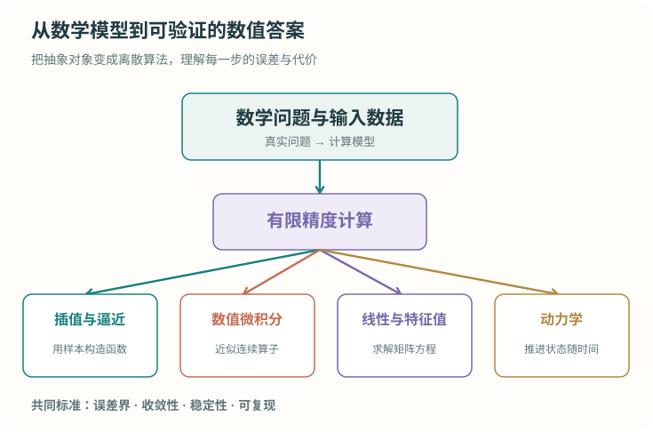

A FIELD GUIDE TO COMPUTATION · 数值分析
计算一个答案，
还要知道它有多可信。
一个公式可以在纸上完全正确，却在计算机里得出错误结果。理解有限精度、条件数、截断误差与算法设计之间的关系，是数值分析真正关心的问题。
28个独立章节
07条学习路径
10已深度重构

HOW TO READ
先看问题和图解，再推导并验证公式。
每篇精修文章从一个具体失败案例出发，逐步构造概念、算法、图示、数学推导、可复现实验和适用边界。第 01–10 章已经重构；06–28 章暂时保留原课程内容，后续逐篇精修。
THE COMPLETE CURRICULUM
七条路径，二十八个问题。
建议依照知识依赖顺序阅读；每一篇也可以独立打开。
计算可信度
误差、舍入与稳定性
插值与连续性
从节点值到光滑曲线
逼近与最小二乘
用有限表达重建连续信息
积分与微分
离散采样下的连续算子
线性系统与迭代
大规模计算的核心
非线性与特征值
迭代、谱与收敛
动力系统与实战
从时间推进到求解器
THE NEXT STEP
学会算法，也学会识别它的失败边界。
从有限精度和插值开始，逐渐扩展到积分、线性系统与动力学。